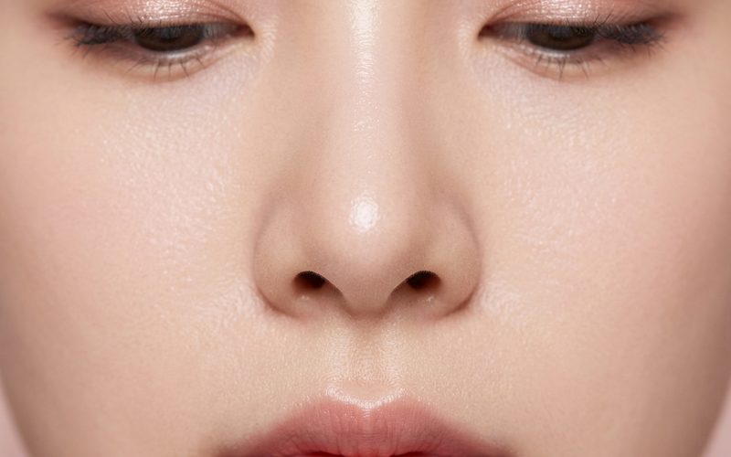
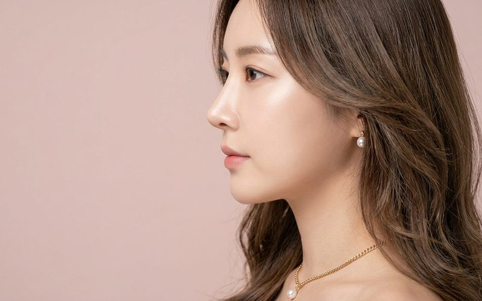
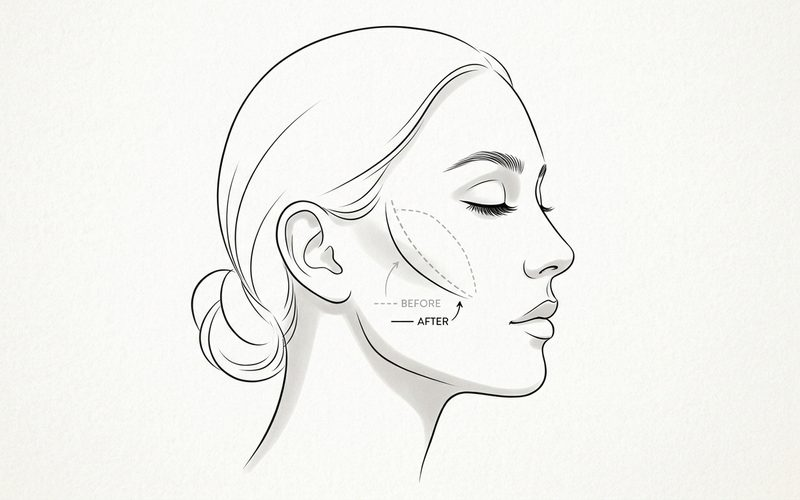
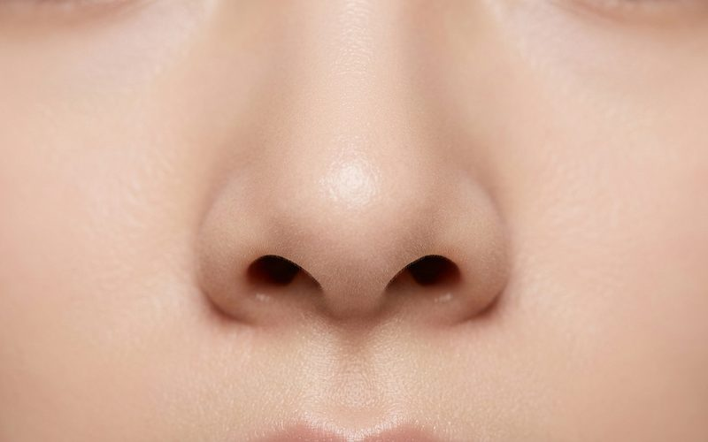

보형물 제거 후 남겨진 피막 조직과 혈류 변화. 재수술을 앞둔 환자가 반드시 알아야 할 조직 상태 평가와 수술 시기 결정 기준을 설명합니다.
연골비침·휜코 동시 교정 — 용코에서 비공내리기까지
자가연골 활용과 비개방 접근법을 선택한 이유
변형 15분 광대축소술 — 뒷광대·옆광대 동시 교정
수술 범위 결정 과정과 지방이식 병행 판단 기준

약한 용코에서 비공내리기 + 콧날개올리기로 콧구멍 가려주기
정면·측면·하면 분석으로 수술법 결정하는 기준

내 인생 마지막 코성형이 되게 해주세요 — 코재수술 전 반드시 알아야 할 것
보형물 없는 매부리코 성형 — 자가연골로만 가능한 케이스의 기준
내시경 이마거상술 — 절개 최소화와 자연스러운 이마 라인을 동시에

그림으로 보는 퀵광대와 변형 15분 광대축소술의 차이점

로코코에서 진행한 실제 케이스 사진을 확인하세요
김상호 원장이 직접 답변해 드립니다